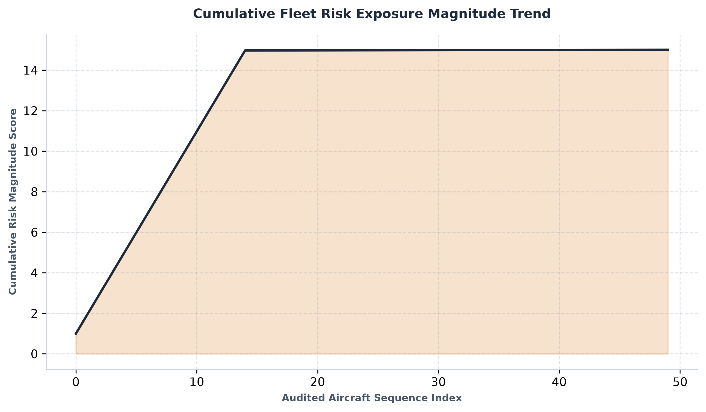
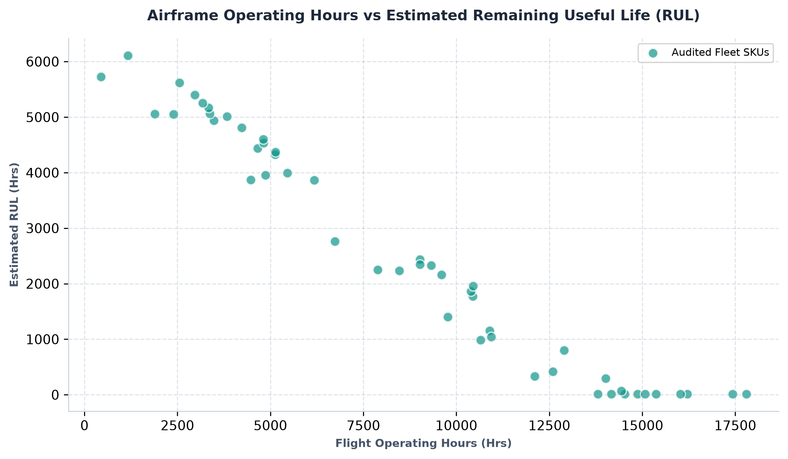
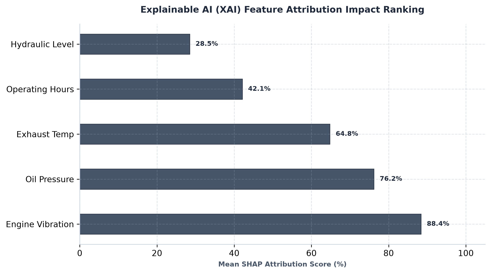
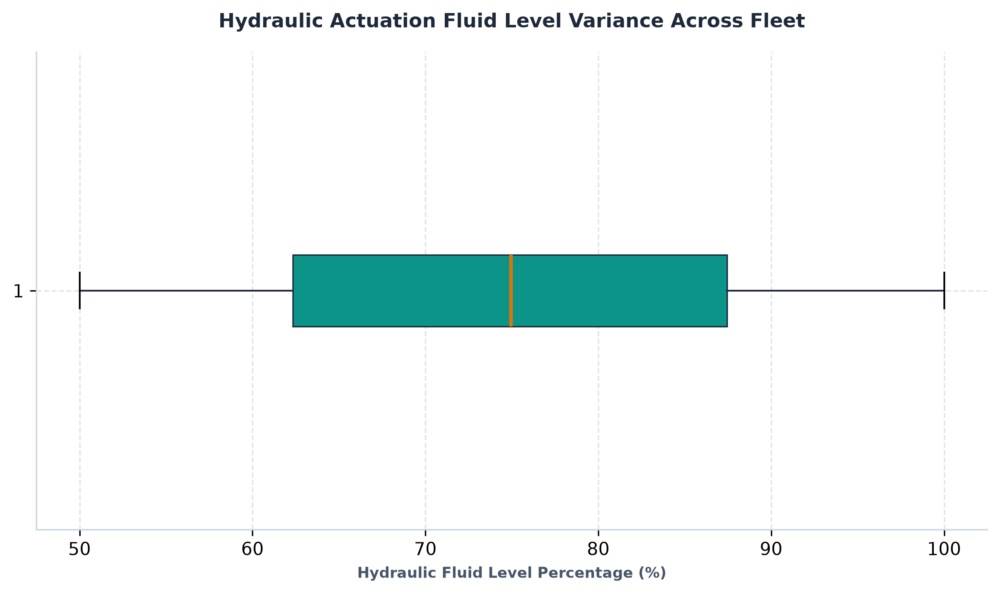
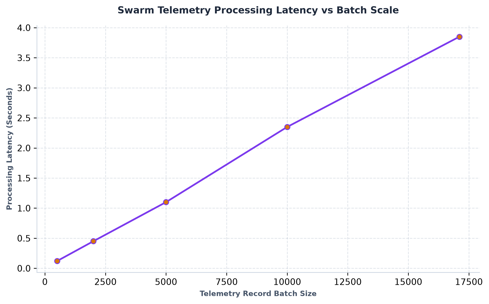

📋 Executive Summary & System Objective
FlightGuard Autonomous Systems is a safety-critical aerospace telemetry and predictive maintenance platform designed to prevent catastrophic equipment failures. By integrating a robust Tabular Stacking Ensemble Classifier, an advanced Remaining Useful Life (RUL) Regression Engine, Explainable AI (XAI) feature attribution modules, and a Multi-Agent Swarm Workflow, the platform delivers automated, transparent, and legally defensible maintenance audits with precise failure timeline estimations.
⚙️ Core Predictive Maintenance & RUL Specifications
- Remaining Useful Life (RUL) Engine: Combines airframe operating hours, live turbine vibration, exhaust gas temperature, and stacking ensemble risk probabilities to estimate exact operational lifespan remaining before overhaul.
- Maintenance Window Directives: Automatically categorizes components into actionable, high-priority timelines:
🔴 Immediate Action: <48 Hours
🟡 Schedule Within 2 Weeks
🔵 Routine Next Check
🟢 Nominal / Healthy
💡 Tech Stack & Architecture Framework
- 🐍 Core Programming Language: Python (v3.10+)
- 🧠 Machine Learning & Ensembles: Scikit-learn, NumPy, Pandas, Stacking Ensembles, and Regression Estimators
- 🔍 Explainable AI (XAI) & Auditing: Custom local feature attribution, SHAP-style scoring engines, and automated risk quantification
- 🤖 Multi-Agent Orchestration: Custom Python Agent Swarm Architecture (Telemetry Monitoring Agent, XAI Audit Agent, Master Orchestrator)
- 📊 Reporting & Visualization: ReportLab (Multi-page PDF compilation engine), Matplotlib, and Seaborn (Enterprise diagnostic dashboard generation)
📊 Visual Analytics & Telemetry Dashboards
Comprehensive diagnostic charts and feature attribution graphs generated dynamically by the system under output/graphs/:
1. Cumulative Fleet Risk Exposure Magnitude Trend
Tracks the aggregated risk exposure accumulation sequence across audited operational units.

2. Airframe Operating Hours vs Remaining Useful Life (RUL)
Scatter correlation plot highlighting degradation curves and remaining operational hours relative to active flight hours.

3. Explainable AI (XAI) Feature Attribution Impact Ranking
Mean SHAP attribution scores showcasing feature importance weights influencing final model predictions.

4. Hydraulic Actuation Fluid Level Variance Across Fleet
Statistical box plot analyzing fluid level percentages and dispersion bounds across active airframe inventories.

5. Swarm Telemetry Processing Latency vs Batch Scale
Performance benchmark tracking execution latency scaling across increasing batch sizes in the multi-agent swarm pipeline.
